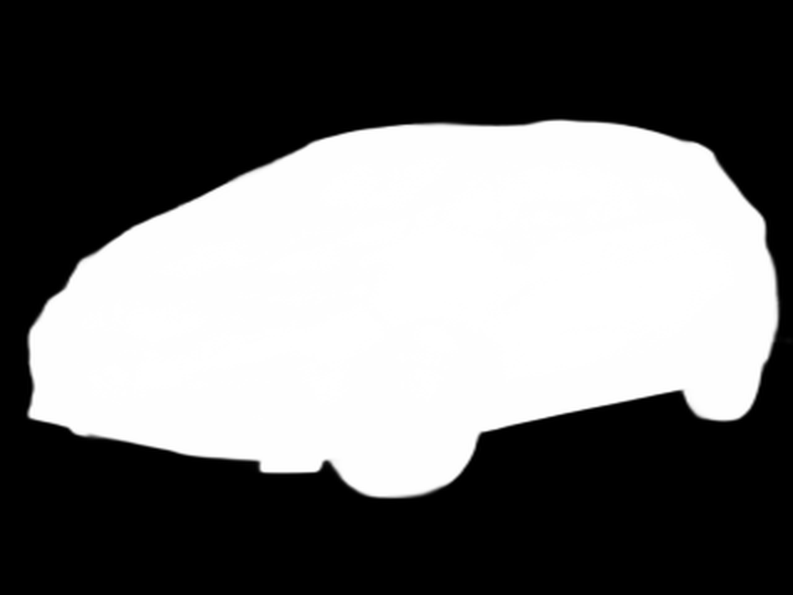

A) Foto Original (INPUT para Flux)

B) Alpha Channel (do PNG segmentado)

C) Alpha Resized (para dimensoes da original)

Em todas as 5 imagens, o Honda Fit virou outro carro (Audi, Ford Fusion, etc). Analise abaixo.

Branco = area a ser INPAINTED (regenerada)
Preto = area a ser PRESERVADA
Se o carro aparece em BRANCO na mascara → Flux vai REGENERAR o carro → bug confirmado (mascara invertida).
Se o carro aparece em PRETO na mascara → mascara esta correta, problema eh outro.
showroom_escuro: "Premium dark car showroom, polished black reflective marble floor, dramatic LED side lighting, dark charcoal walls, professional automotive photography, photorealistic, 8k" estudio_branco: "Professional white photography studio, infinite white cyclorama, soft diffused overhead lighting, clean seamless floor, commercial product photography, photorealistic, 8k" garagem_premium: "Industrial loft garage, textured polished concrete floor, warm amber focused lighting, exposed brick and metal elements, moody atmospheric automotive workshop, photorealistic, 8k" urbano_noturno: "Modern city street at night, wet asphalt reflecting neon lights, cyberpunk atmosphere, defocused building lights, cinematic automotive photography, photorealistic, 8k" neutro_gradiente: "Professional gradient background, smooth transition charcoal gray to deep black, subtle radial lighting, minimalist automotive advertising background, photorealistic, 8k"
Nenhum prompt menciona "preserve the vehicle", "keep the existing car", "do not modify the car".
O prompt descreve APENAS o cenario. A protecao do veiculo depende 100% da mascara estar correta.